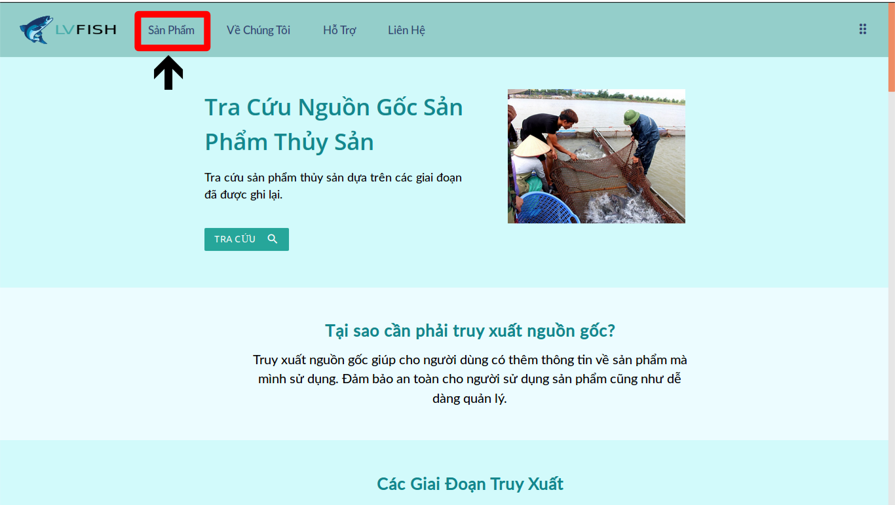
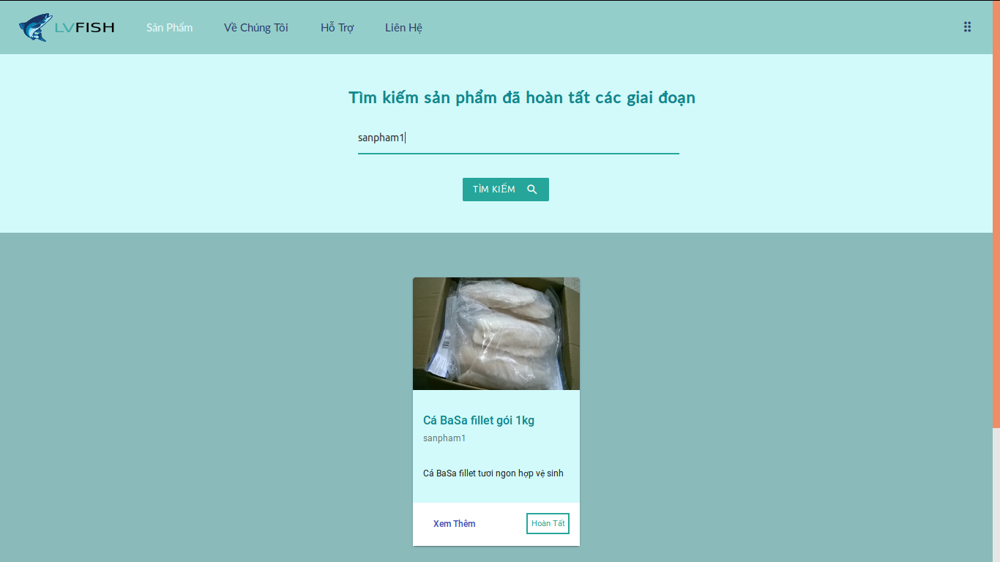
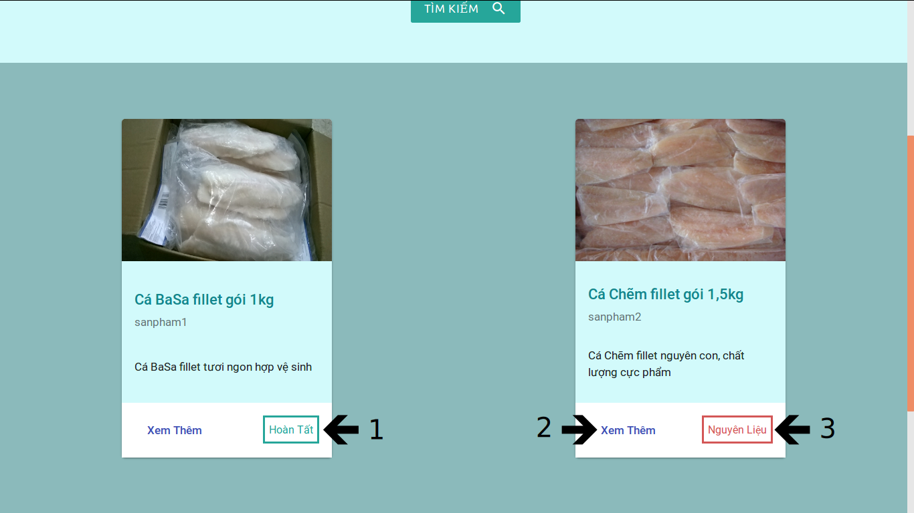
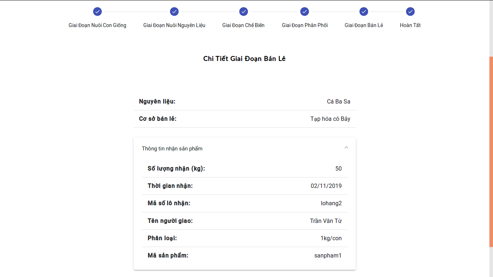

Để truy xuất nguồn gốc một sản phẩm thì người tham gia cần liên hệ với admin để tạo sản phẩm và người tham gia. Sau đó admin sẽ liên hệ với người tham gia để hướng dẫn họ về cách thức nhập thông tin giai đoạn của sản phẩm cũng như đưa cho họ tệp (card) để có thể truy cập vào mạng. Sau khi đã có tệp (card) thì làm theo các bước sau:
Người tham gia cần vào địa chỉ đã cung cấp sau đó click vào nút Sản Phẩm ở thanh tiêu đề.
Sau đó đăng nhập bằng card và tên của bạn.
Người tham gia nhập mã sản phẩm đã được admin cung cấp vào khung nhập liệu sau đó nhấn nút Tìm Kiếm có hình kính lúp.
Sau khi đã tìm ra sản phẩm với thông tin phù hợp thì tiếp tục nhấn vào nút Xem Thêm. Sau đó form nhập thông tin của giai đoạn sẽ hiện ra nếu như bạn đúng là người tham gia vào các giai đoạn sản phẩm và giai đoạn của bạn chưa được nhập. Sau khi nhập xong thì nhấn vào nút Submit và hoàn tất quá trình truy xuất.
1, 3: Trạng thái của sản phẩm
2: Xem thêm nếu như bạn đang ở giai đoạn nuôi nguyên liệu và là nhà cung cấp nguyên liệu
thì sẽ chuyển bạn đến trang nhập nguyên liệu.
Tra cứu nguồn gốc sản phẩm đã được ghi nhận lại từ lúc sản phẩm là con giống cho tới giai đoạn thành phẩm giao cho người dùng. Người dùng cần sử dụng ứng dụng quét mã QR. Sau khi quét thành công sẽ chuyển bạn tới trang web truy cứu nguồn gốc (Bạn cần đăng nhập để sử dụng hệ thống). Khi đăng nhập xong bạn có thể nhấn nút Xem Thêm để biết người tham gia cũng như thông tin của từng giai đoạn.
Công nghệ Blockchain cho phép chúng ta lưu trữ dữ liệu an toàn và bảo mật.
Khi dữ liệu được mã hóa và thêm vào 1 khối (block) thì khối tiếp theo sẽ lưu dữ liệu tiếp theo liên kết với khối trước nó thành một chuỗi. Do đó, khi có người muốn sửa đổi dữ liệu thì sẽ phải làm thay đổi những khối phía sau nó.
Đó là cách mà Blockchain đảm bảo tính toàn vẹn và bất biến cho dữ liệu.
Với lợi ích kể trên thì Blọckchain được ứng dụng vào nhiều nghành nghề cần sự minh bạch như là Y tế, quản lý văn bằng, chuỗi cung ứng,...
Công nghệ được sử dụng là Hyperledger Fabric. Là công nghệ mã nguồn mở với sự tham gia của cộng đồng hỗ trợ rộng lớn như Linux Foundation, IBM, Intel, CISCO,...
Khác với công nghệ Blockchain public như Ethereum (Mọi giao dịch đều được nhìn thấy bới người tham gia). Với Hyperledger Fabric bạn chỉ được tham gia vào mạng khi đã cung cấp danh tính cho hệ thống và với những tổ chức khác nhau sẽ có những kênh riêng
để giao tiếp. Mỗi giao dịch của kênh thì private với kênh khác, đảm bảo vấn đề thông tin nhạy cảm khi hai công ty trao đổi thông tin khác nhau và không muốn bên kia biết thông tin đó.
Khi card không đăng nhập được là do card của bạn đã được sử dụng trước đó và cần liên hệ admin để cung cấp card mới.